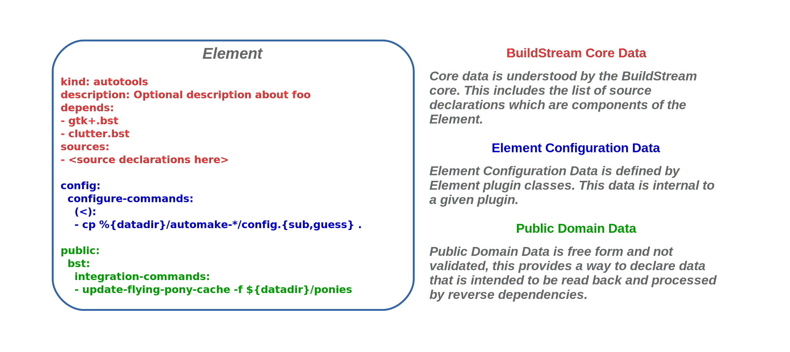
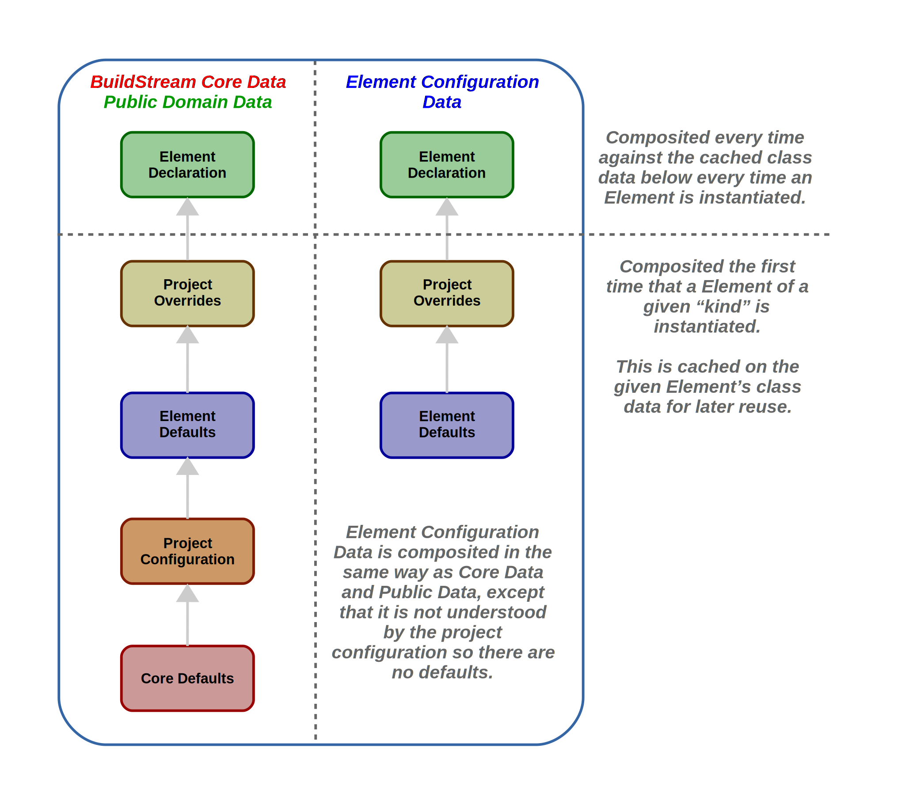
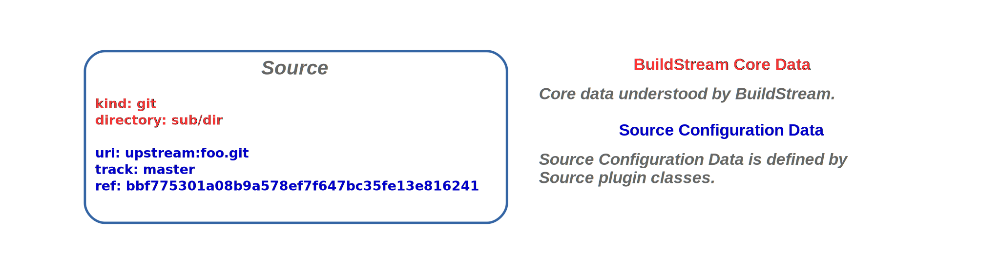
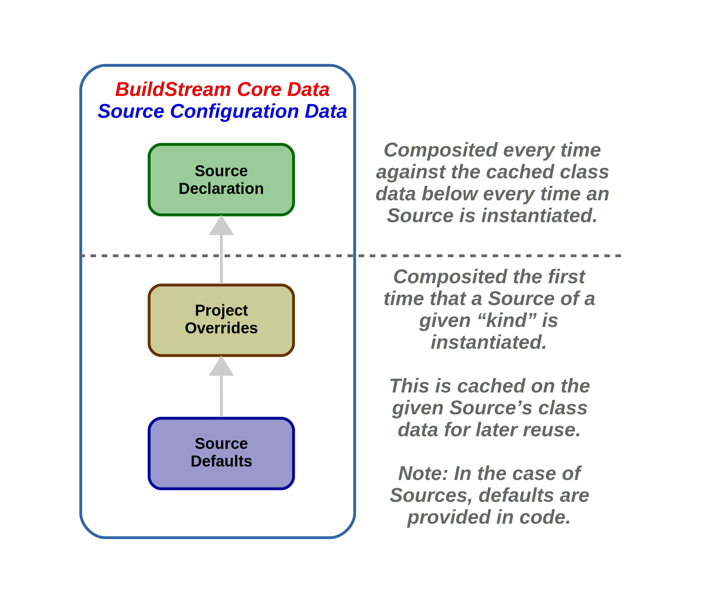
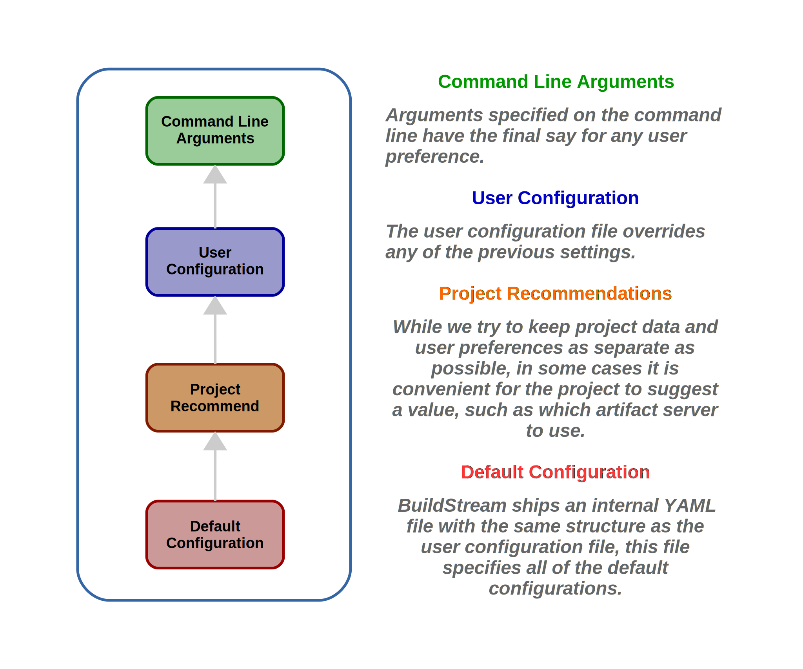

Data model
This section details the data model on which the BuildStream core operates. This includes an overview of the project data model which is BuildStream’s main input, the user preferences, and local state.
Project
The Project object is the main component of a given BuildStream project, and
is responsible for loading and validating the project.conf, and
providing this loaded project data in a convenient way to the BuildStream core.
Conceptually, the project is a container for the Elements,
which are declared within a user’s project, and as such acts as a factory for instantiating
elements at load time.
Element
Elements are the main processing unit in a pipeline. These
are the loaded representation of the .bst files loaded from the project’s element path.
The Element is an abstract base class which cannot do anything on its own, its concrete class is defined by plugins which are either included in the BuildStream core set of plugins or loaded from external sources defined by the project.
The responsibilities of an element include:
Loading the element’s configuration from the core provided dictionary.
Providing a unique key for any element specific configuration which might affect the output produced by the element.
Configuring the sandbox.
Staging the data into the sandbox, which might include Sources and the outputs of previous elements.
Assembling the output artifact.
Element data structure
The properties of an element are a composition of what the BuildStream core understands, the configurations exposed by the Element plugin, and free form data which allows annotations and configurations which can be read back by reverse dependencies during processing, as illustrated here:
Element composition
The element is composed of configurations which are sourced from various entry points using the low level YAML utilities.
This composition takes place after includes and conditional directives are processed, while list composition directives are processed as a result of this composition.
Here is a diagram showing which sources take precedence in the composition process which results in the final element configuration being resolved:
Note that not all BuildStream Core Data is understood by the Element, but a great deal of configurations understood by the Element is also understood by the core and has default configurations built into BuildStream and configurable with the project configuration. These include values such as variables, environment, sandbox, etc.
As shown above, composition is performed in two stages for each element. First we compose everything below the line, this happens just once per ‘kind’ of element - the result is re-used. Secondly, we compose the element declaration on top.
Source
Sources are the abstract objects which are responsible
for obtaining remote source code or data to import into the build environment, and
ensuring that it is done in a bit-for-bit reproducible way without any contamination
of the host or build environment.
This is to say that:
User configuration on the host, or filesystem outside of BuildStream designated directories, must never be modified as a side-effect of running BuildStream.
When the Source uses host tools, host side configurations must never result in deviations of what is staged to a build directory. The Source must behave exactly the same way regardless of host side configurations.
The responsibilities of a source include:
Loading the source’s configuration from the core provided dictionary.
Providing a unique key for any source specific configuration which might affect the staged source.
Implement discovery of new versions of the source upstream (referred to as “tracking”).
Staging the unpacked source to a given directory.
Preparing workspaces.
Source data structure
Similar to the Element, the properties of a source are a composition of what the BuildStream core understands and the configurations exposed by the Source plugin:
Note
In .bst files, the BuildStream core configurations and Source specific configurations share the same dictionary.
Strictly speaking this is limiting, but provides a measure of convenience as .bst files are a bit less wordy to express.
Source composition
Source composition is much simpler than Element composition, because defaults cannot be specified at the project level, excepting for Source type specific value overrides.
Context
The Context object is a very centric part of the BuildStream data model, and is not a part of the Project data described above but rather is where we load and store all of the user preferences.
User preferences are sourced from various locations, but usually have a default, an option in the user configuration file, and an option to override it on the command line.
Asides from being a focal point for loading and storing all user configuration, the Context object also plays a central role in the logging framework.
Workspaces
The Workspaces object is yet another kind of state. Unlike the Context and the Project data model, the Workspaces object loads, saves and stores in memory the local state regarding a user’s active and open workspaces.
These are stored in the local state .bst/ subdirectory of users projects.